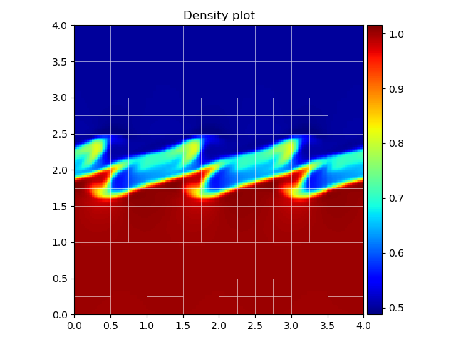

Introduction on reading datfiles
This page provides guidelines and examples to read in and process MPI-AMRVAC .dat files with Python. All required packages and instructions on how to set up the tools folder are described in Setting up the python tools. The datfile tools can be found in the folder $AMRVAC_DIR/tools/python/datfiles.
Please note: the legacy Python tools do not support polar/cylindrical/spherical datasets, and/or stretched/staggered grids. We (highly) recommend to use yt (see the docs) for datfile analysis with Python.
Reading datasets
Obtaining dataset information
All functionality is contained in the file amrvac_reader.py, present in the datfiles/reading subdirectory. This class contains various instances and methods linking to other classes and methods in different subdirectories, keeping usage plain and simple with just one single import. To import the reader into your script (assuming you installed amrvac_pytools):
import amrvac_pytools as apt
As an example, we will use the file KH0015.dat, which is the 2D MHD Cartesian Kelvin-Helmholtz problem from the tests folder. In order to read in this file, it is sufficient to type
ds = apt.load_datfile('KH0015.dat')
It is necessary to stress that this command loads the information of the .dat file, not the actual data itself. This is especially useful to inspect large datasets or time series, without having to load the data into memory every time. We can inspect this dataset further by using ds.get_info(), which prints
[INFO] Current file : KH0015.dat [INFO] Datfile version : 4 [INFO] Current time : 7.5 [INFO] Physics type : mhd [INFO] Boundaries : [0. 0.] -> [4. 4.] [INFO] Max AMR level : 3 [INFO] Block size : [12 12] [INFO] Number of blocks : 172 ---------------------------------------- Known variables: ['rho', 'm1', 'm2', 'e', 'b1', 'b2', 'v1', 'v2', 'p', 'T']
Note that both the conserved and primitive variables are known and available for data analysis. The current time of the dataset can be retrieved by ds.get_time(), the physical boundaries can be obtained by ds.get_bounds(). The latter returns a list in the form [[x1, x2], [y1, y2]], which will be extended by x3, y3 and [z1, z2, z3] for a 3D dataset, with similar reasoning for a 1D dataset. The method ds.get_extrema(var) returns the minimum and maximum value of the required variable var in the entire dataset, where var is one of the known variables above.
Working with the data
In order to load the entire dataset into memory, one can use the method
ad = ds.load_all_data()
Most likely the dataset will contain multiple levels of AMR, such that loading this into one single Numpy array is not trivial. Instead, a regridding is performed to the finest block level over the grid, and all blocks are regridded to this level using flat interpolation. This operation is parallelised using Pythons multiprocessing module, and will only work in Python 3. The optional argument nbprocs specifies the number of processors to use when performing the regridding, this will default to two less than the number available. The optional argument regriddir specifies the directory where to save the regridded data as .npy (Numpy) files. The default directory is regridded_files, which will be created in the same folder as the current script if it is not present. Subsequently, the reader will load this regridded data if the script is executed again.
The data can then be accessed by calling the corresponding name in the ad dictionary, for example:
rho = ad['rho']
or any other of the known variables (see above). This works in 1D, 2D and 3D, however, for large 3D datasets the regridding can take quite some time.
Plotting datasets
The datfile tools include support for plotting both 1D and 2D datasets, in two variants. The first option is directly plotting the regridded data, which requires that ds.load_all_data() has been called. Plotting is then done via
ds.rgplot(ad['rho'])
where we passed the Numpy array containing the density as an example.
The second option is much more convenient, as it supports plotting the AMR data directly with an optional mesh overlay. This is done through
ds.amrplot('rho')
Note the difference here between rgplot and amrplot, in calling the latter method we simply supply the name of the variable to plot. Finally, calling ds.show() shows all created figures in separate windows.
Example
The following code snippet produces the figure shown below.
ds = apt.load_datfile('KH0015.dat')
p = ds.amrplot('rho', draw_mesh=True, mesh_linewidth=0.5, mesh_color='white',
mesh_linestyle='solid', mesh_opacity=0.8)
p.ax.set_title("Density plot")
p.fig.tight_layout()
ds.show()
When assigning the plot to the variable p, we can retrieve the matplotlib figure and axis instances by calling p.fig and p.ax, respectively, transferring full control of the figure to the user. The colorbar can be retrieved by p.colorbar. Plotting on a logarithmic scale is supported for both rgplot and amrplot, by supplying the argument logscale=True. As shown below, setting draw_mesh=True plots the overlaying AMR mesh. The linewidth, color, linestyle and opacity of the mesh are also specified, and can take in default matplotlib values. The colormap can be chosen by supplying the cmap argument, the default is jet.

Both rgplot and amrplot create new matplotlib figure and axis instances that are used for plotting. However, both methods accept a figure and axis instance as extra argument, which will then be used instead. This is useful in for example plotting multiple snapshots on a single figure using subplots, like the example below shows.
import matplotlib.pyplot as plt
fig, ax = plt.subplots(1, 2, figsize=(10, 6))
ad = ds.load_all_data()
p1 = ds.amrplot('rho', fig=fig, ax=ax[0], draw_mesh=True, mesh_color='white',
mesh_opacity=0.4, mesh_linewidth=1)
p2 = ds.rgplot(ad['p'], fig=fig, ax=ax[1], cmap='Greens')
p1.colorbar.set_label("density")
p2.colorbar.set_label("pressure")
p1.ax.set_title("density plot with mesh overlay")
p2.ax.set_title("pressure plot")
fig.tight_layout()
plt.show()
Synthetic views
The python tools also include a ray-tracing algorithm along one of the coordinate axes to create synthetic views. Currently two types are supported, the first one being a synthetic H-alpha view based on a method described in Heinzel et al. (2015). Basically, based on tables given in said paper the degree of ionisation is calculated using the local pressure and temperatures, from which the opacity can be calculated and eventually the H-alpha intensity by integrating along the line of sight. The second type is a synthetic view of the Faraday rotation measure, which is only possible for MHD datasets as it uses the component of the magnetic field parallel to the line of sight. Creating these views can be done as follows:
ds.halpha(line_of_sight='x') ds.faraday(line_of_sight='x')
In this example, the line of sight is taken along the x-axis, which is the default value. The colormap can be specified using the cmap keyword argument, plotting on a logarithmic scale is done by supplying logscale=True. Additionally, just like before, the matplotlib figure, axis and colorbar instances can be obtained by calling for example Ha = ds.halpha(), followed by Ha.fig, Ha.ax or Ha.colorbar.
Please note that the creation of these synthetic views can take some time for large 3D datasets with multiple levels of AMR, as the routines have to integrate each block and merge the results into one single image. As a final comment, it is important that the units are correctly specified to ensure a consistent calculation of the synthetic views, see Units below.
Units
Everything described above (except for the synthetic views) is calculated using normalised code units. In order to retrieve the correct physical values of the variables in the dataset, it is important (and good practice) to correctly define the unit normalisations. The default unit system is cgs, which can be switched to si via
ds.units.cgs=False
If cgs units are required, this can be omitted. Setting the normalisations is quite straightforward, and is done through
ds.units.set_units(unit_length=1.0e9, unit_numberdensity=1.0e9, unit_temperature=1.0e6)
using for example typical solar values in cgs. The unit_length and unit_numberdensity must always be specified, the third argument can either be unit_temperature or unit_velocity. The code then automagically calculates all other normalisations, which can be accessed through
ds.units.unit_length ds.units.unit_numberdensity ds.units.unit_temperature ds.units.unit_density ds.units.unit_magneticfield ds.units.unit_time
and so on. Some astrophysical constants are also included, accessible in a similar manner by doing ds.units.m_p, which retrieves the proton mass in either cgs or si units, depending on the unit system used. Known constants are R, m_e, m_p, k_B, ec, c and Rsun for the gas constant, electron and proton mass, Boltzmann constant, electric charge, speed of light and solar radius, respectively. Converting a variable back to physical units can then be done using
pressure = ad['p'] * ds.units.unit_pressure current_time = ds.get_time() * ds.units.unit_time
and so on. If no unit normalisations are specified, the default values of MPI-AMRVAC will be used.
Generated by